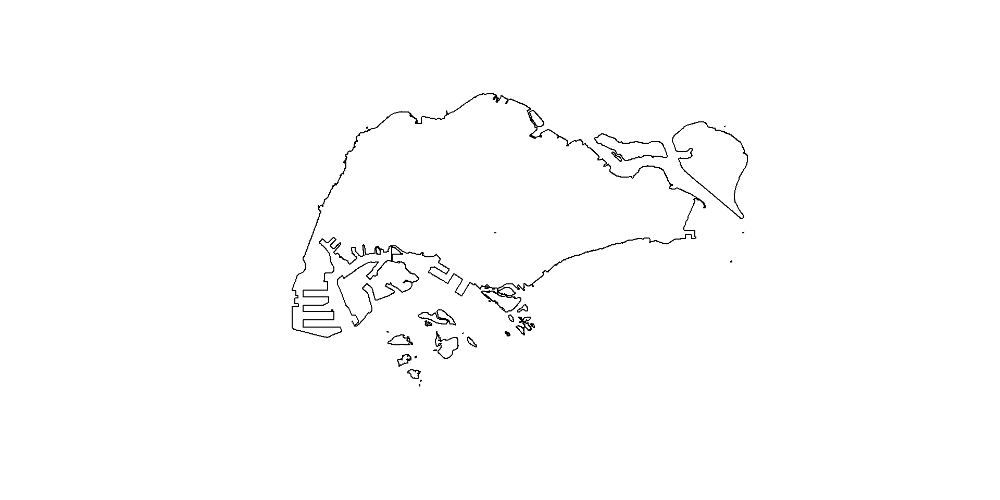
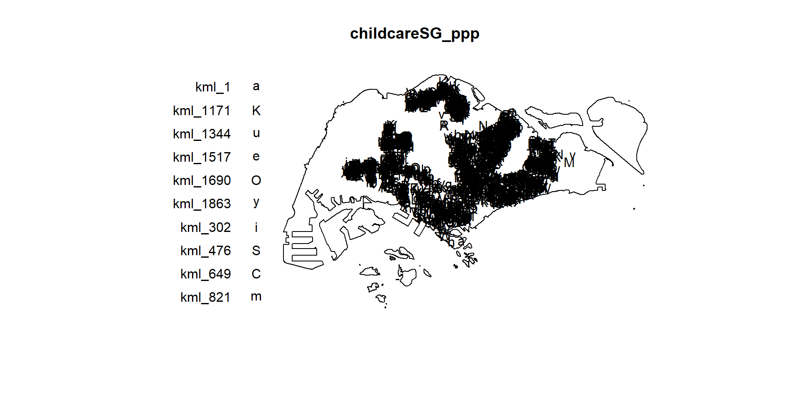
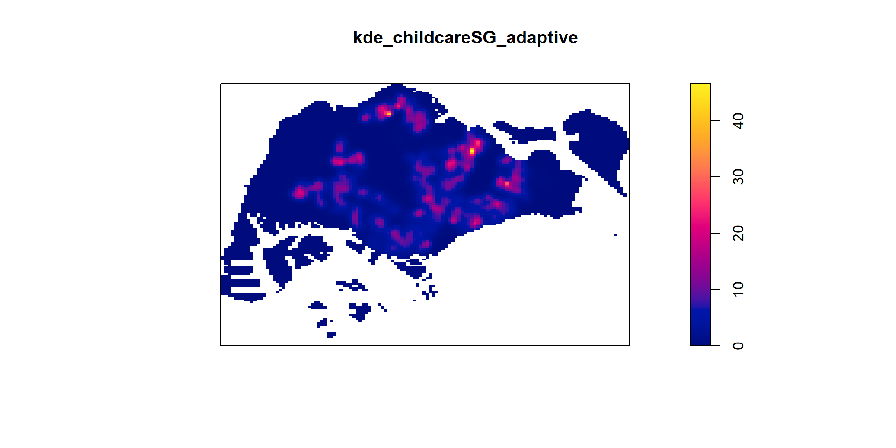
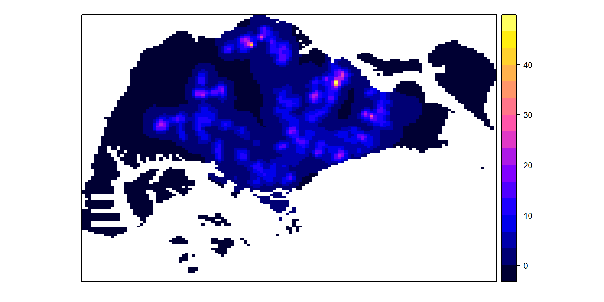
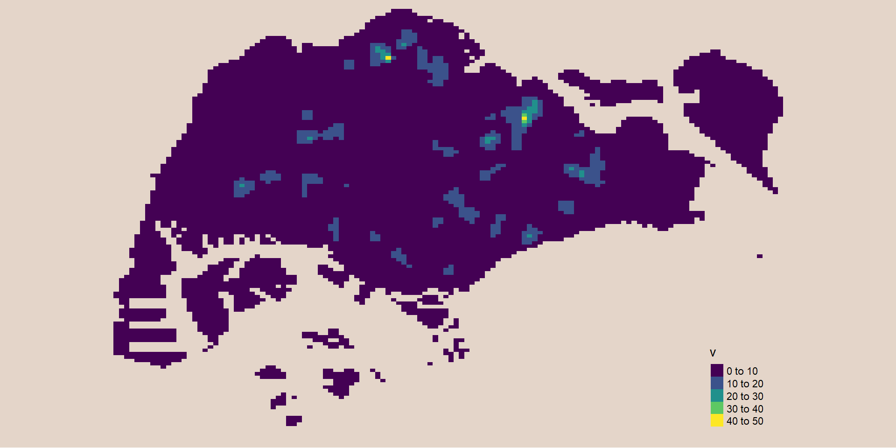
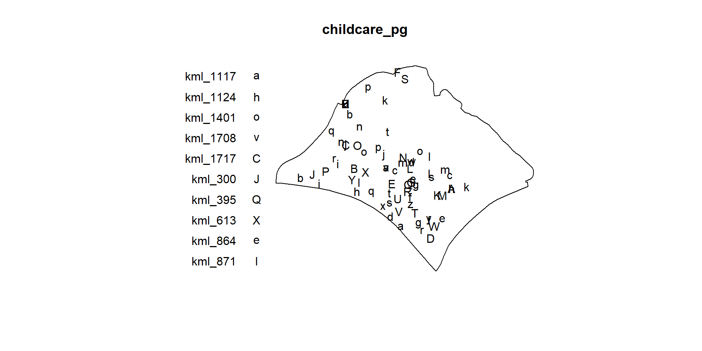
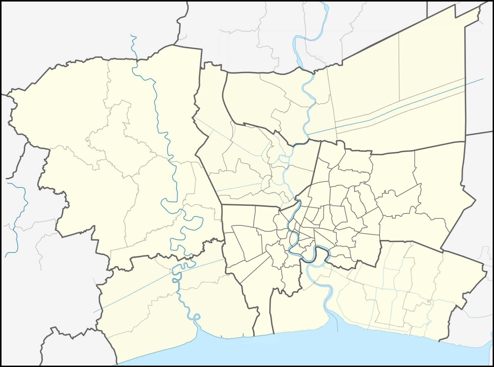

Code
pacman::p_load(sf, raster, spatstat, tmap, tidyverse)Qu JunJie
September 2, 2024
October 18, 2024
maptools is retired and bnary is removed from CRAN. However, we can download from Posit Public Package Manger snapshots by using the code chunk below.
After the installation is completed, it is important to edit the code chunk as show above in order to avoid
In sf package, there are two functions allow us to combine multiple simple features into one simple features. They are st_combine() and st_union().
st_combine() returns a single, combined geometry, with no resolved boundaries; returned geometries may well be invalid.
If y is missing, st_union(x) returns a single geometry with resolved boundaries, else the geometries for all unioned pairs of x[i] and y[j].
sg_sf will look similar to figure below.
st_union()The code chunk below, st_union()is used to derive the coastal outline sf tibble data.frame.
sg_sf will look similar to the figure below.

spatstat R package is a comprehensive open-source toolbox for analysing Spatial Point Patterns. Focused mainly on two-dimensional point patterns, including multitype or marked points, in any spatial region.
The spatstat package now contains only documentation and introductory material. It provides beginner’s introductions, vignettes, interactive demonstration scripts, and a few help files summarising the package.
The spatstat.data package now contains all the datasets for spatstat.
The spatstat.utils package contains basic utility functions for spatstat.
The spatstat.univar package contains functions for estimating and manipulating probability distributions of one-dimensional random variables.
The spatstat.sparse package contains functions for manipulating sparse arrays and performing linear algebra.
The spatstat.geom package contains definitions of spatial objects (such as point patterns, windows and pixel images) and code which performs geometrical operations.
The spatstat.random package contains functions for random generation of spatial patterns and random simulation of models.
The spatstat.explore package contains the code for exploratory data analysis and nonparametric analysis of spatial data.
The spatstat.model package contains the code for model-fitting, model diagnostics, and formal inference.
The spatstat.linnet package defines spatial data on a linear network, and performs geometrical operations and statistical analysis on such data.
Instead of using the two steps approaches discussed in Hands-on Exercise 3 to create the ppp objects, in this section you will learn how to work with sf data.frame.
In the code chunk below, as.ppp() of spatstat.geom package is used to derive an ppp object layer directly from a sf tibble data.frame.
Next, summary() can be used to reveal the properties of the newly created ppp objects.
In the code chunk as.owin() of spatstat.geom is used to create an owin object class from polygon sf tibble data.frame.
Next, summary() function is used to display the summary information of the owin object class.
Using the step you learned from Hands-on Exercise 3, create an ppp object by combining childcare_ppp and sg_owin.
The output object combined both the point and polygon feature in one ppp object class as shown below.

The code chunk below re-scale the unit of measurement from metre to kilometre before performing KDE.

Code chunk shown two different ways to convert KDE output into grid object

The code chunk below is used to plot the output raster by using tmap functions.

Extract and create an ppp object showing child care services and within Punggol Planning Area
On the other hand, filter() of dplyr package should be used to extract the target planning areas as shown in the code chunk below.

In order to ensure reproducibility, it is important to include the code chunk below before using spatstat functions involve Monte Carlo simulation
In spatstat, edge correction methods are used to handle biases that arise when estimating spatial statistics near the boundaries of a study region. These corrections are essential for ensuring accurate estimates in spatial point pattern analysis, especially for summary statistics like the K-function, L-function, pair correlation function, etc.
Common Edge Correction Methods in spatstat
“none”: No edge correction is applied. This method assumes that there is no bias at the edges, which may lead to underestimation of statistics near the boundaries.
“isotropic”: This method corrects for edge effects by assuming that the point pattern is isotropic (uniform in all directions). It compensates for missing neighbors outside the boundary by adjusting the distances accordingly.
“translate” (Translation Correction): This method uses a translation correction, which involves translating the observation window so that every point lies entirely within it. The statistic is then averaged over all possible translations.
“Ripley” (Ripley’s Correction): Similar to the isotropic correction but specifically tailored for Ripley’s K-function and related functions. It adjusts the expected number of neighbors for points near the edges based on the shape and size of the observation window.
“border”: Border correction reduces bias by only considering points far enough from the boundary so that their neighborhood is fully contained within the window. This can be quite conservative but reduces the influence of edge effects.
The study area is Bangkok Metropolitan Region.
The projected coordinate system of Thailand is WGS 84 / UTM zone 47N and the EPSG code is 32647.
For the purpose of this exercise, three basic data sets are needed, they are:
Using the steps you learned in previous lessons, import the downloaded accident data into R environment and save the output as an sf tibble data.frame.
Using the steps you learned in previous lessons, import the ACLED data into R environment as an sf tibble data.frame.